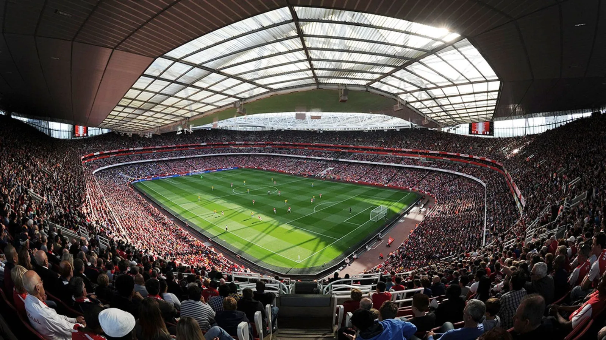
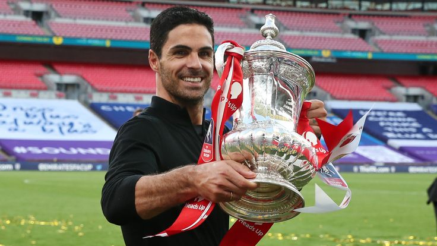

Arsenal je fotbalový klub, který sídlí v Londýně na Emirates stadionu a hraje nejvyšší anglickou ligu: Premier League.
Arsenal je považován v historii anglického fotbalu mezi nejlepší 2 týmy. Vyhrál 13 ligových titulů (včetně roku 2004 "Invincibles", kdy neprohráli ani jednou za celou sezónu), rekordních 14 FA Cupů, dva Ligové poháry a 16 FA Community Shields.

Arsenalu se bohužel poslední roky moc nedařilo, střídali trenéry, vždy jim utekla top 4 a díky tomu se nekvalifikovali do Ligy mistrů, nemohli přivést nejlepší hráče a v Evropské lize se jim také moc dobře nevedlo. Poté přišel Arteta na funkci trenéra a vedení konečně nechalo nějakého trenéra pořádně pracovat a dalo mu důvěru. Arteta ve své první sezóně vyhrál FA cup a Comunity shield. Další sezónu mu nevyšel začátek a těsně přišel o umístění v top 4. Poslední 2 sezóny už arsenal patří mezi adepty na titul a vrací se do svých nejlepších let. Už by Arteta potřeboval akorát aby mu tam nějaká velká trofej cinkla.
